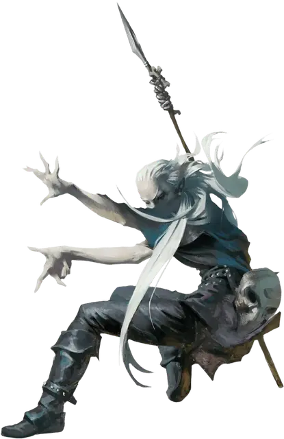

Шадар-кай ткач мрака
Shadar-kai Gloom Weaver
Средний Гуманоид (Эльф), обычно нейтрально-злой

Класс Доспеха 14 (17 с магическим доспехом)
Хиты 104 (16к8 + 32)
Скорость 30 футов
| мод | спас | ||
|---|---|---|---|
| СИЛ | 11 | +0 | +0 |
| ЛОВ | 18 | +4 | +8 |
| ТЕЛ | 14 | +2 | +6 |
| мод | спас | ||
|---|---|---|---|
| ИНТ | 15 | +2 | +2 |
| МДР | 12 | +1 | +1 |
| ХАР | 18 | +4 | +4 |
Иммунитет к урону некротическая энергия
Иммунитет к состояниям истощение, очарование
Чувства тёмное зрение 60 футов, пассивное Восприятие 11
Языки Общий, Эльфийский
Опасность 9 (5000 опыта)
Бонус мастерства +4
Среда обитания Город, Подземье
Особенности
Бремя времени. Звери и гуманоиды, отличные от шадар-каев, совершают с помехой спасброски, когда находятся в пределах 10 футов от ткача мрака.
Наследие фей. Ткач мрака совершает с преимуществом спасброски от очарования, и магия не может его усыпить.
Действия
Мультиатака. Ткач мрака совершает три атаки Теневым копьём. Он может заменить одну из атак Использованием заклинаний.
Теневое копьё. Рукопашная атака оружием: +8 к попаданию, досягаемость 5 фт., одна цель. Попадание: 7 (1к6+4) колющего урона, или 8 (1к8 + 4) колющего урона, если используется двумя руками, плюс 26 (4к12) урона некротической энергией.
Использование заклинаний. Ткач мрака накладывает одно из следующих заклинаний, используя Интеллект в качестве базовой характеристики и без использования материальных компонентов (Сл спасброска от заклинаний 16):
• Неограниченно: магический глаз [arcane eye], доспехи мага [mage armor], малая иллюзия [minor illusion], фокусы [prestidigitation], разговор с мёртвыми [speak with dead];
• 1/день каждое: магические врата [arcane gate], порча [bane], смятение [confusion], тьма [darkness], ужас [fear], образ [major image], истинное зрение [true seeing].
Реакции
Туманное бегство (перезарядка 6). Когда ткач мрака получает урон, он становится невидимым и телепортируется на расстояние до 60 футов в свободное пространство, которое может видеть. Невидимость сохраняется до начала его следующего хода или до момента, когда он атакует или накладывает заклинание.
Описание
В вечном мраке сумрака живёт общество, прислуживающее Королеве Воронов. Они были принесены в это тёмное царство в прошлые века так давно, что теперь они идеально адаптировались к этой угрюмой среде, как физически, так и умственно.
Шадар-кай
В вечном мраке сумрака живут шадар-каи, эльфы, прислуживающее Королеве Воронов. Они были принесены в это тёмное царство в прошлые века так давно, что теперь они идеально адаптировались к этой угрюмой среде, как физически, так и умственно.
Эоны воздействия изнурительной среды обитания Царства Теней сделали их печальными и угрюмыми созданиями. В этом измерении, они имеют вид высохших эльфов: светлые волосы, морщинистая серая кожа и опухшие суставы дают им трупоподобный внешний вид. Они выглядят более молодыми в других планах, но их кожа всегда сохраняет свою мертвецкую бледноту. Они надевают тёмные плащи и тяжёлые маски, ненавидят зеркала и избегают тех вещей, что напоминают им о собственном возрасте.
Шадар-каи наблюдает за Царством Теней и Материальным планом, разыскивая души и трагические события, которые могут порадовать их божество. По слухам, они способны повлиять на мировые события трагическим образом ради её удовольствия. Тем не менее, королева Ворона представляет загадку даже для своих самых преданных последователей. Усилия шадар-кай вознаграждаются только неопределёнными предзнаменованиями, которые они интерпретируют, как только могут.
Крепость воспоминаний
Шадар-каи, наиболее преданные Королеве Воронов, служат ей в Крепости Воспоминаний, её искаженном замке в Царстве Теней. Эта крепость – весьма мрачное место, заполненное непрекращающимся эхом прошлого. Стаи воронов, что служат её глазами и ушами, затмевают небеса вокруг крепости, залетая внутрь неё, и передают ей зашифрованные сообщения и знамения из всей мультивселенной.
В Крепости Воспоминаний имеется множество безделушек и предметов, которые Королева Воронов считает неотразимыми, а также обрывки человеческих воспоминаний о прошлом, содержащие в себе глубокие чувства боли, горя, тоски, вины или раскаяния. Эти безделушки могут включать в себя мебель, часы, зеркала, драгоценности и игрушки. Также в крепости обитают призрачные видения людей, мест и домашних животных. Любая из этих вещей может незамедлительно дать информацию о ней, а каждый объект или явление может в переносном смысле стать изложением какой-либо истории (большой или маленькой), что насыщена острыми эмоциями.
Шадар-каи, встреченные за пределами Царства Теней, часто отправляются на поиски предметов, наиболее тронутых скорбью, которые они могут найти, чтобы вернуть в мрачный замок своей королевы.